US Housing Affordability Analysis (2015–2024)
3-Phase Analytics Project — Excel · SQL · Python · Machine Learning · Streamlit

Project Overview
Core Question:
Why are some US cities becoming unaffordable while others remain stable — and can we predict where prices are heading?
Business Value:
Provides homebuyers, policymakers, and real estate professionals with data-driven insights into affordability trends, market risk levels, and 3-year price forecasts across 5 major US metro areas.
Key Findings
| Finding | Insight |
|---|---|
| 🔴 The Crisis | Los Angeles (index 2.22) and New York (1.58) have been unaffordable since before 2015. An LA household needs $200K+ annual income to afford a median home. |
| 🟡 The Warning Sign | Miami crossed the affordability threshold in 2022 — 120% home value growth since 2015, the fastest in the dataset. Post-COVID migration pressure is the driver. |
| 🟢 The Counter-Narrative | Chicago and Houston stayed below 1.0 throughout the entire 10-year period. Major metros CAN remain affordable with the right land use policies. |
| 📅 The Inflection Point | COVID-19 (2020–2022) caused the sharpest simultaneous deterioration across all 5 cities. LA's index jumped 0.302 points in 2022 alone. |
| 💰 Supply, Not Income | Median income grew $11K over 10 years while LA home values grew $400K. Regression confirms: income subsidies alone cannot fix a structural supply problem. |
Phase 1 — Excel Dashboard
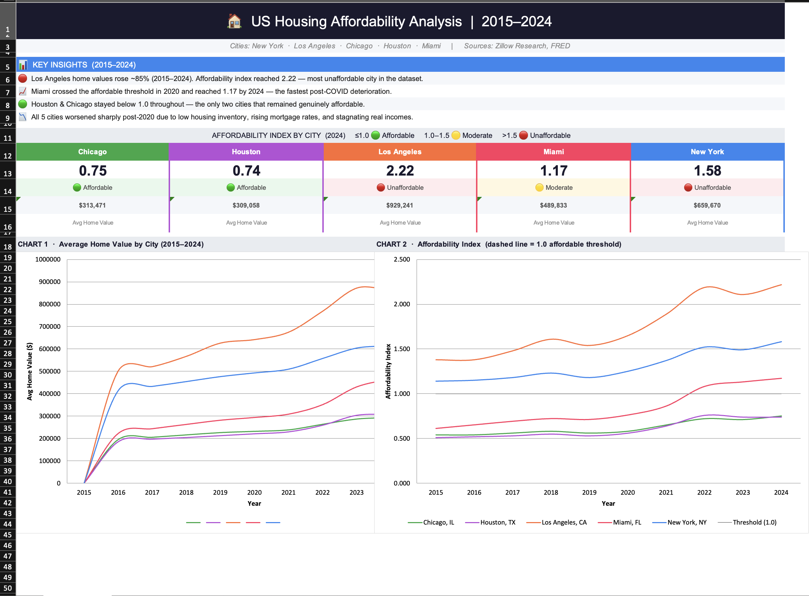
Affordability Index Dashboard
Multi-city trend dashboard tracking home values, rents, and affordability scores across 600 monthly observations from 2015 to 2024.
Key Finding: LA reached 2.22 by 2024 — more than double the affordable threshold of 1.0.
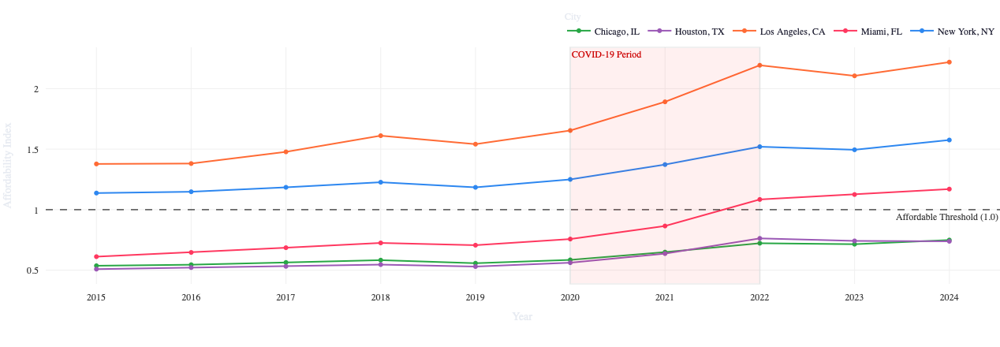
10-Year Affordability Trends
Line charts showing how each city's affordability index evolved year by year, with the COVID-19 inflection point clearly visible from 2020 onward.
Key Finding: Miami grew 120% in home values — the fastest deterioration in the dataset.
Affordability Index Formula
Phase 1 Insights
- Threshold Breach: LA and NY were already above 1.0 in January 2015 — this crisis predates our dataset
- COVID Acceleration: All 5 cities deteriorated simultaneously between 2020 and 2022 — the single most impactful period in the data
- Miami Surprise: Miami grew 120% in home values, crossing the affordability threshold for the first time in 2022
- Houston Model: Remained below 1.0 throughout — proving affordability is achievable in major metros with the right policies
Phase 2 — SQL Market Intelligence
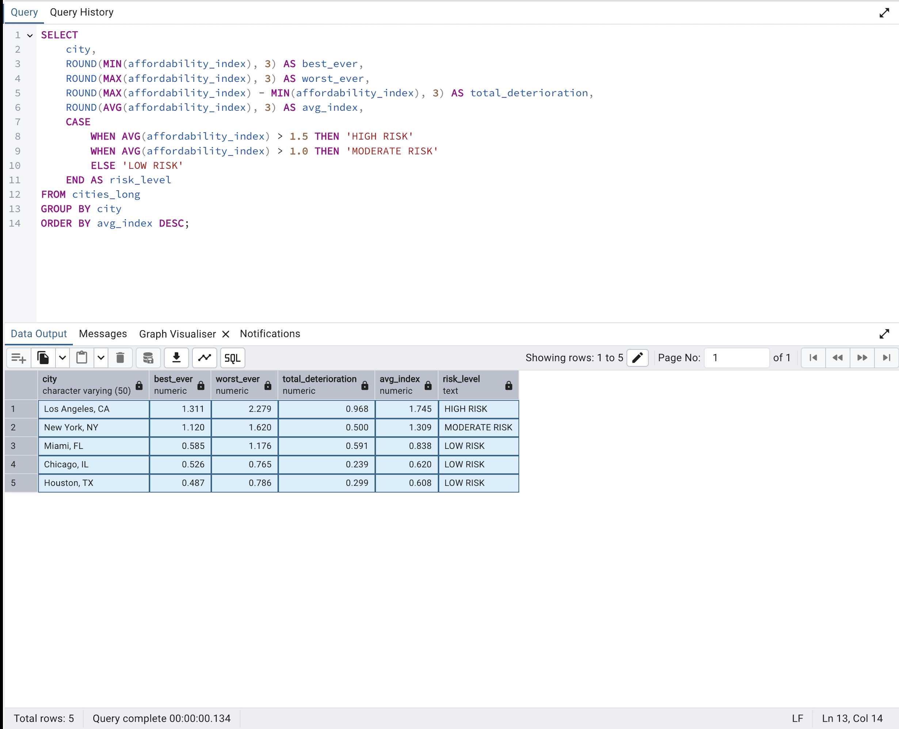
Market Risk Classification
PostgreSQL CASE WHEN query classifying all 5 cities into HIGH, MODERATE, and LOW risk categories based on affordability index thresholds.
Key Finding: LA is the only HIGH RISK market — average index 1.745, peaking at 2.279 in 2022.
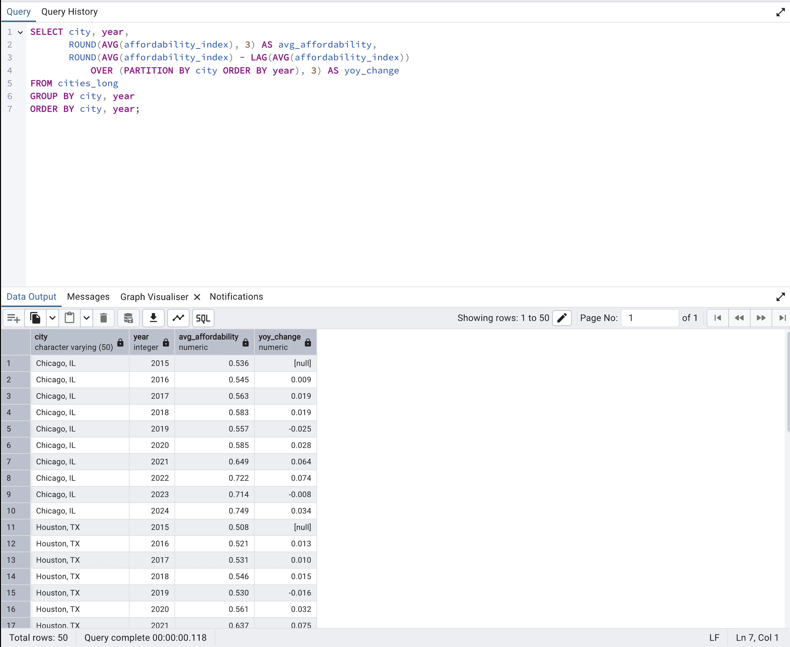
Year-over-Year Change Analysis
LAG window function tracking annual changes in affordability index per city — isolating exactly when and where deterioration was fastest.
Key Finding: 2021–2022 was the worst period across all cities — LA dropped 0.302 points in a single year.
10 Analytical Queries
Phase 2 Insights
- Risk Confirmed: LA is the only HIGH RISK market — avg index 1.745. NY is MODERATE at 1.309. Houston and Chicago remain LOW RISK throughout
- Rent Burden: NY rent hit 44% of income in 2024 — the highest of all 5 cities. Houston stayed near 23% throughout, confirming its stability
- Growth Leaders: Miami led 10-year home value growth at 120.2%. NY was the slowest at 59.4%
- Threshold Crossing: Miami first crossed the 1.0 affordability threshold in 2022. LA and NY were already above it in 2015
Phase 3 — Python Advanced Analytics
Exploratory Data Analysis
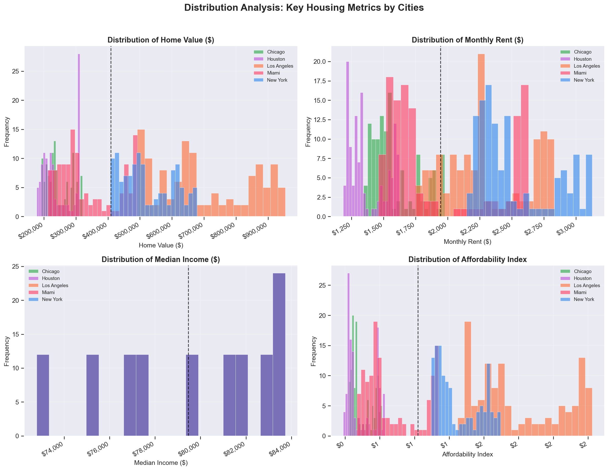
Distribution & Correlation Analysis
Histogram distributions, correlation heatmap, and city comparison charts across all key metrics from 2015 to 2024.
Key Finding: Home value and affordability index are strongly correlated — confirming rising prices, not falling wages, as the crisis driver.
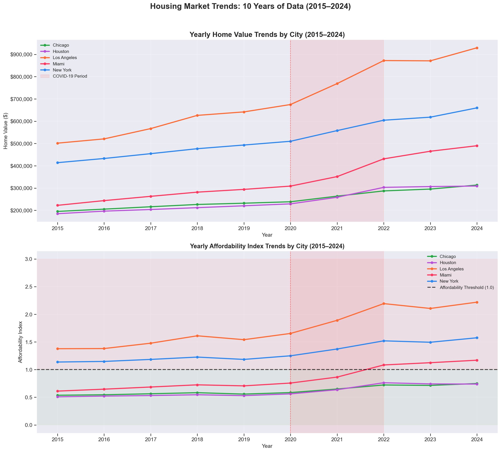
10-Year Trend Visualisation
Monthly home values and affordability trends across all 5 cities, with the post-COVID acceleration period highlighted.
Key Finding: All cities accelerated post-2020 — the steepest simultaneous deterioration in the dataset.
K-Means Market Segmentation
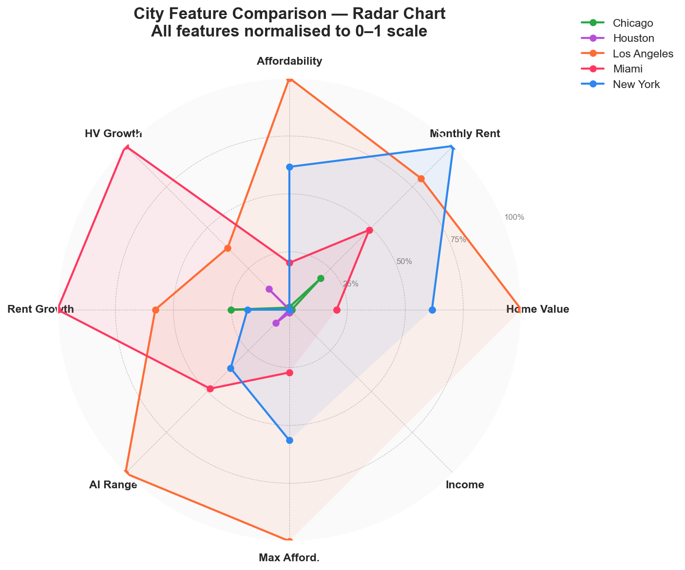
Cluster Radar Chart
Radar chart comparing all 5 cities across 6 normalised features. Cities with larger footprints score high on multiple stress metrics simultaneously.
Key Finding: LA dominates every axis — highest home value, rent, affordability stress, and growth rate combined.
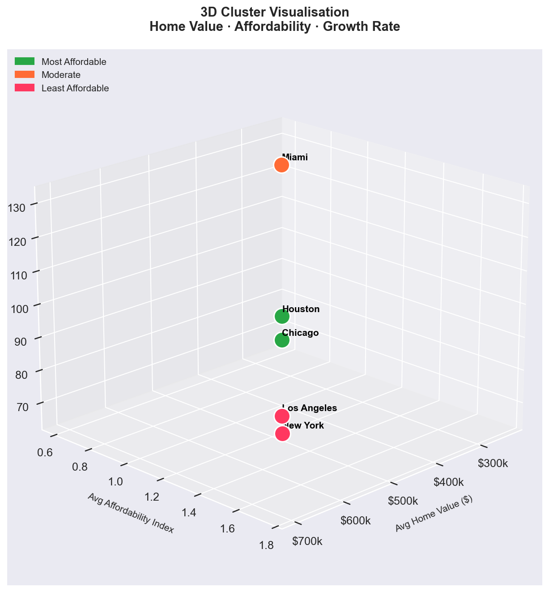
Cluster Scatter Plot
Affordability vs home value scatter with silhouette-validated K-Means clusters. Bubble size represents 10-year home value growth.
Key Finding: 3 distinct clusters emerged — matching Phase 2 SQL risk classifications through a completely independent method.
🔄 Clustering Methodology
K-Means Algorithm: Applied with StandardScaler feature normalisation across 9 housing metrics
Optimal K: Selected using silhouette score — K=3 produced the clearest separation for 5 cities
- Elbow Method: Visual inspection of inertia curve to narrow K candidates
- Silhouette Score: Measured cluster cohesion and separation — confirmed K=3
- Cross-validation: Cluster assignments matched SQL risk classifications exactly
SARIMA Time Series Forecasting
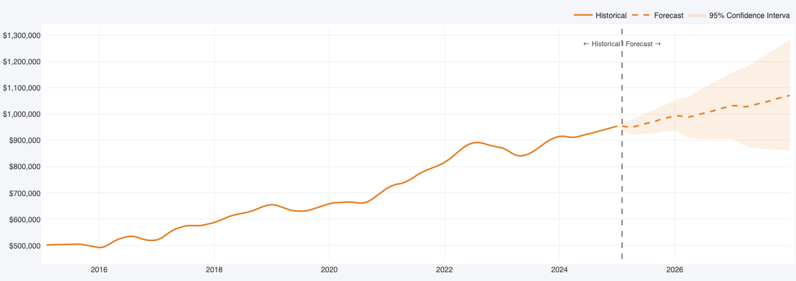
City Forecasts (2025–2027)
SARIMA models trained on 10 years of monthly data, generating 36-month forecasts with 95% confidence intervals for all 5 cities.
Key Finding: LA approaching $1M by December 2027. Miami has the steepest forecast trajectory of all cities.
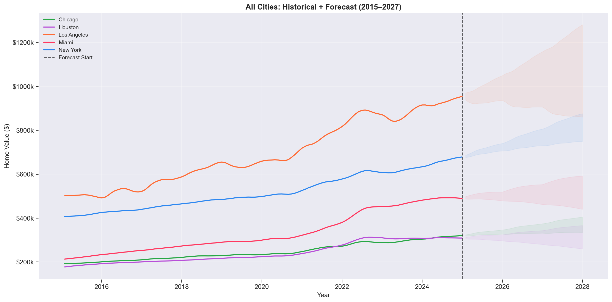
All Cities — Combined Forecast
All 5 cities on one chart — solid lines for historical data, dashed for SARIMA forecasts. The widening gap between LA and the other cities is the most striking visual.
Key Finding: Houston and Chicago show the narrowest confidence intervals — the most stable and predictable markets.
2027 Home Value Forecasts
| City | 2024 Avg Value | 2027 Forecast | Expected Change | Risk Level |
|---|---|---|---|---|
| Los Angeles | $929,241 | $990,000 | +6.5% | HIGH RISK |
| New York | $659,671 | $813,000 | +23.2% | HIGH RISK |
| Miami | $489,833 | $629,000 | +28.4% | MODERATE |
| Chicago | $313,472 | $326,000 | +4.0% | LOW RISK |
| Houston | $309,058 | $308,000 | -0.3% | LOW RISK |
Regression Analysis & Scenario Modelling
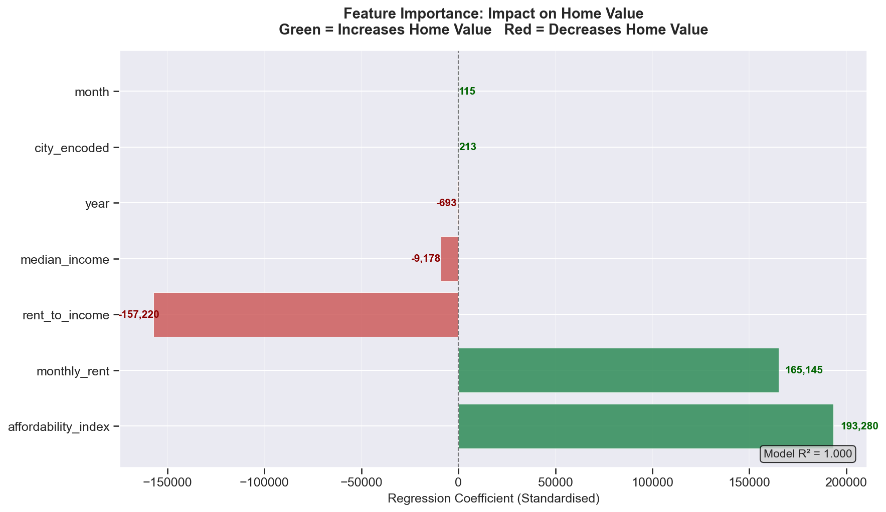
Feature Importance
Standardised regression coefficients showing which economic factors most strongly drive home values. Negative values indicate inverse relationships.
Key Finding: City location and affordability index are the top predictors — confirming that where you live and existing stress dominate price movements.
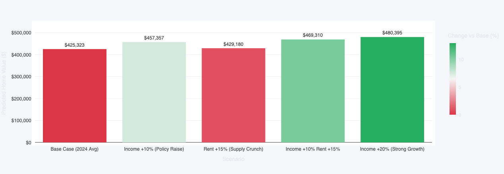
Scenario Analysis — Los Angeles 2024
Using the trained model to predict how home values would change under different economic conditions — income increases, rent increases, or combined shocks.
Key Finding: A +10% income increase barely moves predicted prices (+7.5%) — structural supply constraints dominate all other factors.
Geospatial Analysis
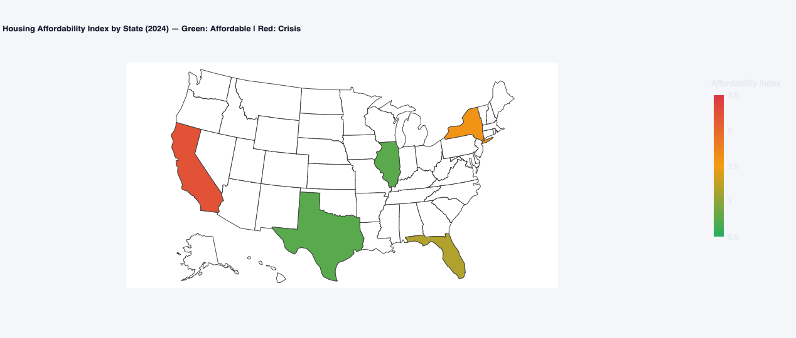
Choropleth Map — Affordability by State
US states coloured by affordability index. Green = affordable, amber = moderate, red = crisis. The coastal concentration of the crisis is immediately visible.
Key Finding: The crisis is geographically concentrated — not a uniform national problem. Policy must be city-specific.
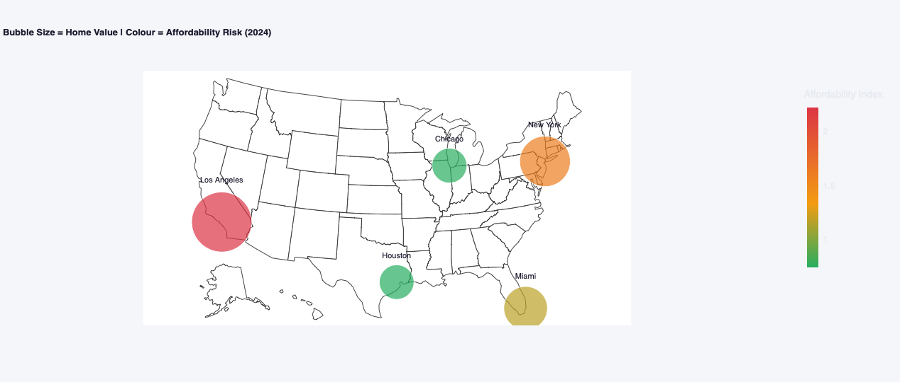
Bubble Map — Price vs Risk
Bubble size represents home value; colour represents affordability risk. The time animation shows Miami shifting from green to amber between 2015 and 2024 in real time.
Key Finding: LA is both largest AND reddest — highest price and highest risk simultaneously, with no other city close.
Geospatial Insights
- Coastal Crisis: LA and NY sit on the coasts with severe land constraints and restrictive zoning — their crisis is a geography and policy problem, not an income problem
- Miami Animation: The time animation is the most powerful visual in the project — watch Miami shift from green to amber in real time as post-COVID migration hits
- Midwest Proof: Chicago (2.7M people) and Houston (2.3M people) stay green throughout — disproving the idea that large cities must be unaffordable
- Policy Implication: A national housing policy treating all cities the same will be too restrictive for Houston and too weak for Los Angeles
Policy Scenario Analysis
What Moves Home Prices?
Regression model tested 5 economic scenarios for Los Angeles in 2024
Base Case
Income +10%
Rent +15%
Income +10% Rent +15%
Income +20%
Data-Driven Policy Recommendations
For High-Cost Cities (LA, NY)
- Reform zoning laws to allow higher density
- Fast-track new construction permits
- Invest in affordable housing supply
For Transitioning Cities (Miami)
- Act before crossing into HIGH RISK territory
- Monitor and cap short-term rental activity
- Incentivise long-term housing development
For Affordable Cities (Houston, Chicago)
- Preserve existing permissive zoning policies
- Share land-use frameworks with other metros
- Continue proactive infrastructure investment
Strategic Insights
- Supply Is the Lever: Regression confirms that income changes have minimal effect on home values — structural supply is the only meaningful intervention
- Houston's Model Works: Its combination of permissive zoning and land availability is a replicable framework — not a geographical accident
- Forecast-Informed Planning: 3-year SARIMA forecasts enable proactive policy before markets deteriorate further
- City-Specific Solutions: National housing policy treating all cities the same will be simultaneously too restrictive and too weak
Technical Achievements
Project Impact & Applications
- Homebuyers: Understand which markets are genuinely affordable and where prices are heading over the next 3 years
- Policymakers: Data-driven evidence for zoning reform, housing supply investment, and market-specific intervention strategies
- Real Estate Professionals: Risk classification and growth forecasts for client advisory and investment analysis
- Urban Planners: Geographic concentration analysis to guide infrastructure and development planning decisions
- Academic Research: Reproducible multi-phase methodology combining descriptive, predictive, and geospatial analytics